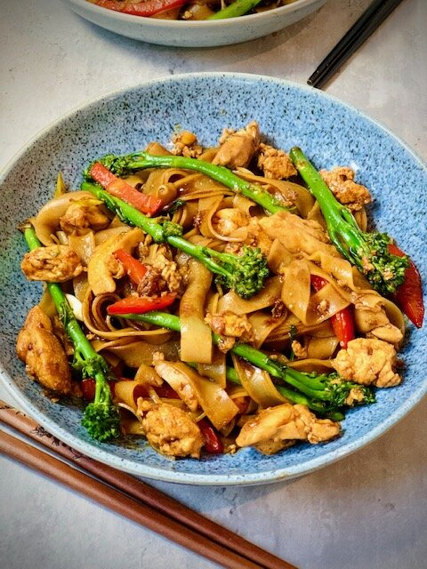

Pad See Ew

Description
A popular Thai soy sauce noodle dish.
Ingredients
- 1 (8 ounce) package wide rice noodles
- 1 cup bite size broccoli pieces
- 1 tablespoon vegetable oil
- 1 teaspoon crushed garlic
- ½ pound rib-eye steak, sliced thin
- ½ cup water
- 3 tablespoons oyster sauce
- 3 tablespoons soy sauce
- 1 tablespoon fish sauce
- 1 tablespoon white sugar
- 1 pinch salt and ground black pepper to taste
- 1 egg
Steps
- Place the dry rice noodles in a bowl, cover with hot water, and let soak until white and soft but not mushy,
about 10 minutes. Drain and set aside.
- Bring a small pot of water to a boil; cook the broccoli in the boiling water until cooked and still firm,
5 to 7 minutes. Drain and set aside.
- Heat the oil in a skillet over medium heat; cook the garlic in the hot oil until fragrant, 3 to 5 minutes.
Stir in the sliced steak; cover the skillet and cook until the meat is just turning from pink to grey,
5 to 7 minutes. Whisk the water and cornstarch together in a bowl; pour into the skillet along with the
oyster sauce, soy sauce, fish sauce, and sugar. Add the rice noodles and broccoli and stir to mix evenly.
Season with salt and pepper. Allow the mixture to simmer while you prepare the egg.
- Prepare a small skillet with cooking spray and heat over medium-low heat. Cook the egg in the prepared skillet
until cooked through and the yolk is solid. Add the cooked egg to the other skillet and stir to incorporate. Serve hot.